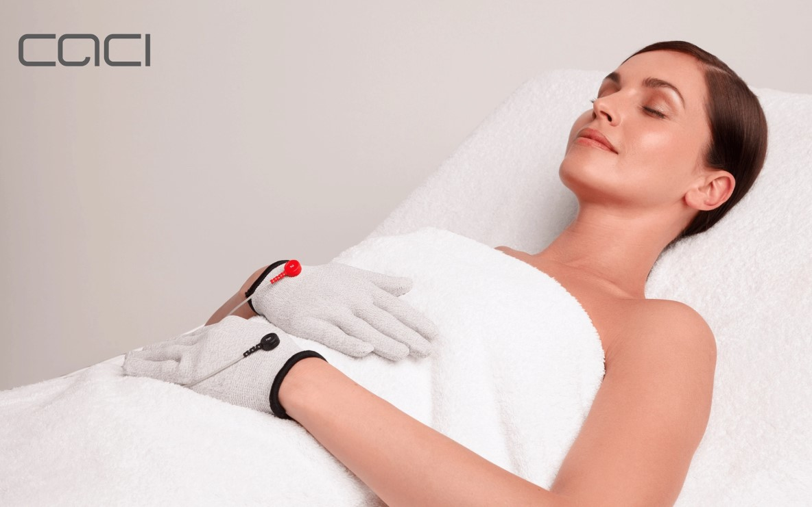
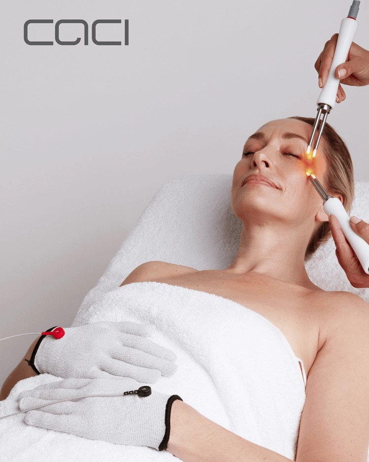

Lift, Tone & Rejuvenate – Without Surgery
Experience the latest in non-surgical facial toning with our CACI treatments. Utilizing state-of-the-art technology, CACI helps to lift and tone facial muscles, reducing the appearance of fine lines and wrinkles. CACI treatment systems deliver visible results without surgery or invasive procedures. With over 20 years of success, these treatments have garnered significant demand and celebrity endorsements. Each session begins with a consultation to tailor the treatment to your needs.
Restore your skin’s youthful glow? CACI’s award-winning microcurrent technology stimulates facial muscles, smooths fine lines, and improves skin elasticity—without needles, surgery, or downtime. Trusted by skincare professionals and loved by celebrities, CACI offers clinically proven results to help you look and feel your best.
he CACI Non-Surgical Facelift is a clinically proven treatment that lifts and tones facial muscles, smooths fine lines, and enhances collagen production—giving you a firmer, more sculpted look.
- ✔ Instantly lifts and tones sagging facial muscles
- ✔ Smooths fine lines and wrinkles for a more youthful appearance
- ✔ Stimulates collagen and elastin for firmer, tighter skin
- ✔ Improves circulation, hydration, and skin texture
- ✔ Completely pain-free, non-invasive, and requires no downtime
Using advanced microcurrent technology, this treatment delivers low-level electrical impulses to re-educate facial muscles, restoring strength and elasticity. The result? A natural, youthful lift with visible improvements in tone and texture.
According to CACI International:
- ✔ Muscle tone can improve by up to 85%
- ✔ Wrinkle depth can reduce by up to 38%
- ✔ Collagen production is enhanced for long-term skin rejuvenation
Who is this treatment for?
- Anyone experiencing sagging facial muscles or loss of definition
- Those looking to reduce fine lines and wrinkles naturally
- Individuals wanting a non-invasive facelift alternative
- Clients seeking preventative anti-aging care
See visible lifting and toning in just one session!



Experience the CACI Difference
At Beauty with Christina, we bring you the most advanced CACI non-surgical treatments for natural, long-lasting results.
Book Your CACI ConsultationLift, Tone & Rejuvenate – Without Surgery
Experience the latest in non-surgical facial toning with our CACI treatments. Utilizing state-of-the-art technology, CACI helps to lift and tone facial muscles, reducing the appearance of fine lines and wrinkles. CACI treatment systems deliver visible results without surgery or invasive procedures. With over 20 years of success, these treatments have garnered significant demand and celebrity endorsements. Each session begins with a consultation to tailor the treatment to your needs.
Restore your skin’s youthful glow? CACI’s award-winning microcurrent technology stimulates facial muscles, smooths fine lines, and improves skin elasticity—without needles, surgery, or downtime. Trusted by skincare professionals and loved by celebrities, CACI offers clinically proven results to help you look and feel your best.